Endocytosis, lysosomes and autophagy
Protein handling and organelles
About this lecture
The secretory pathway carries proteins out of the cell. Today we follow the opposite direction: how a cell takes things in from outside, sorts them, keeps what it can reuse, and digests the rest. The same digestion system also eats parts of the cell itself.
After this lecture you can:
- describe clathrin-mediated endocytosis step by step, and the role of dynamin;
- explain receptor-mediated uptake of LDL, and why receptors recycle while their cargo is digested;
- explain how endosomes mature and acidify (V-ATPase), and how pH sorts cargo into recycling or degradation;
- describe lysosomes, how their enzymes get there (mannose-6-phosphate), and the other routes in: macropinocytosis, phagocytosis, autophagy;
- explain how statins, PCSK9 inhibitors, antibody–drug conjugates, lipid nanoparticles and enzyme replacement depend on this pathway.
ELO 4 (protein handling) and ELO 5 (organelles and homeostasis).
The question: why do some teenagers have heart attacks?
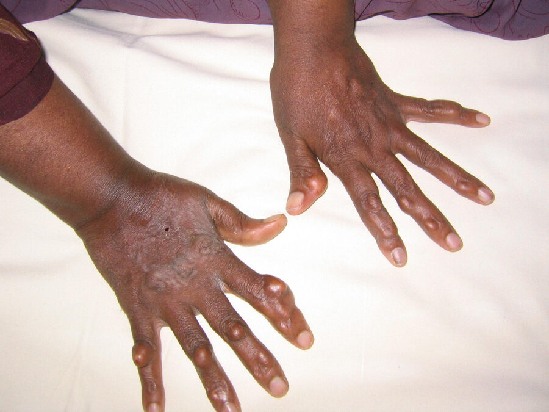
Hands of an 18-year-old with familial hypercholesterolaemia. The lumps over the knuckles are xanthomas: cholesterol deposits in tendons. She had a heart attack at 18.
- Familial hypercholesterolaemia (FH): blood LDL cholesterol 2–3× normal in about 1 in 250 people, 4–6× in the rare children with two faulty genes.
- Cholesterol builds up in arteries: heart attacks at 30–40, or in childhood.
- The cells of these patients can make cholesterol normally. Yet they cannot take LDL out of the blood.
- In 1973 Michael Brown and Joseph Goldstein asked: how does a cell take in a particle of 20 nm from the blood? The answer opened the field of receptor-mediated endocytosis.
Ways into the cell: a map
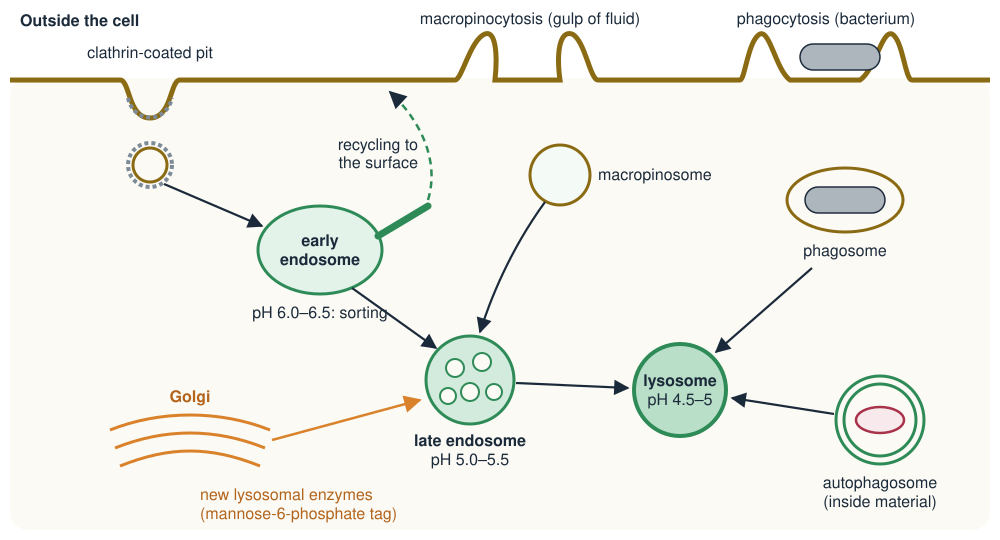
- Endocytosis: the plasma membrane folds in and pinches off a vesicle. Small vesicles (clathrin), large gulps of fluid (macropinocytosis), whole bacteria (phagocytosis).
- Everything meets in endosomes, which sort: back to the surface or on to the lysosome. Autophagy delivers material from inside the cell.
- Recap from the Golgi lecture: vesicles are shaped by a coat, find their target with Rab proteins and fuse with SNAREs. The same machinery works here.
Clathrin-mediated endocytosis, step by step
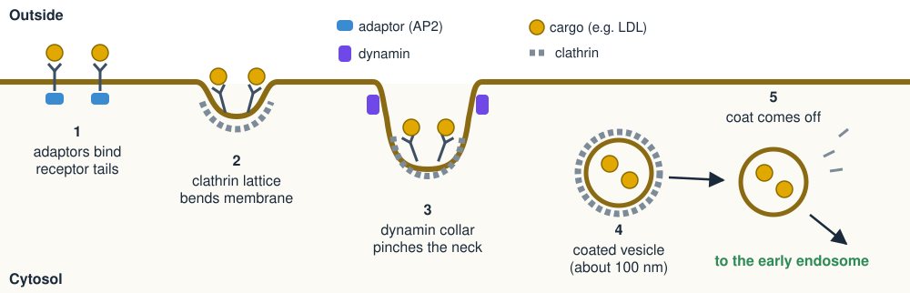
- Adaptor proteins (AP2) grab short sorting signals in the cytosolic tails of receptors (for the LDL receptor: NPxY, a 4-amino-acid motif).
- Clathrin binds the adaptors and forms a lattice that bends the membrane into a pit.
- Dynamin, a GTPase, forms a collar around the neck and pinches the vesicle off. The coat comes off within seconds.
- A pit takes about a minute; a cell makes thousands of coated vesicles per minute.
How do we know? Coats in the electron microscope, and a paralysed fly
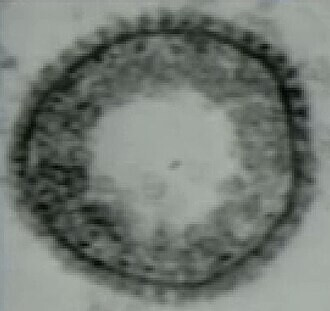
A clathrin-coated vesicle, thin-section EM: the bristly coat surrounds the membrane.
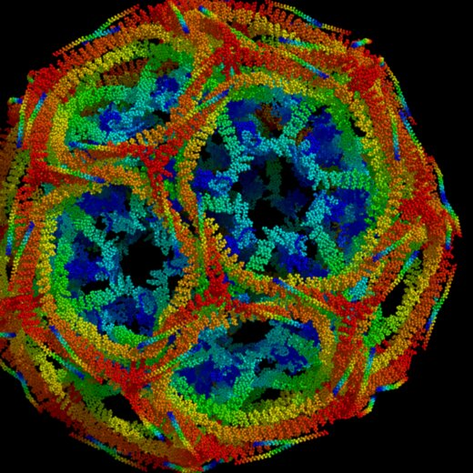
Structure of a clathrin cage (PDB 1XI4): legs of many three-legged clathrin molecules.
- 1964, Roth and Porter: mosquito eggs take up yolk protein through pits with a bristly coat on the cytosolic side.
- 1976, Anderson, Brown and Goldstein: LDL tagged with ferritin (iron core, dark in EM) sits in coated pits and appears in vesicles minutes later.
- Dynamin: the fruit-fly mutant shibire is paralysed within seconds at 29 °C. Its nerve endings are full of pits stuck on necks: they cannot pinch off, so synaptic vesicles are not recycled. The gene encodes dynamin. Cooling the fly reverses it.
Receptor-mediated uptake: the LDL receptor cycle
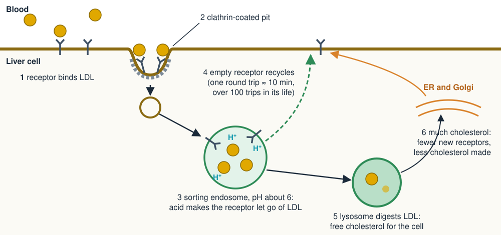
- LDL: a particle of about 22 nm with ~1500 cholesterol esters inside and one apoB protein that the receptor binds.
- The receptor enters pits with or without LDL; at the acidic pH of the endosome it lets go. LDL goes to the lysosome; the receptor recycles.
- Feedback: a cell with plenty of cholesterol makes fewer receptors. Try it: the LDL receptor cycle.
How do we know? Patients’ cells revealed the receptor
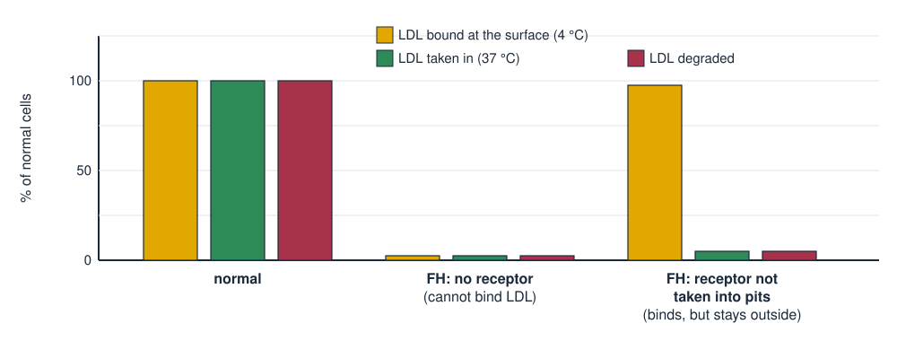
- Brown and Goldstein grew skin fibroblasts from patients and gave them radioactive (¹²⁵I) LDL. Binding at 4 °C (no endocytosis), uptake and degradation at 37 °C.
- Most FH cells could not bind LDL: no working receptor. One patient’s cells (“J.D.”) bound LDL but never took it in. His receptor had lost the tyrosine of NPxY: the signal that brings receptors into coated pits.
- Schematic heights, not their data.
Endosomes mature and become more acidic
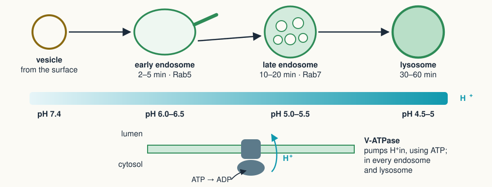
- The V-ATPase uses ATP to pump H⁺ into the lumen (the transporters lecture). The further along, the more pumps and the lower the pH.
- Early endosome: sorting station, tubules for recycling, marked by Rab5. It matures into a late endosome (Rab7) with internal vesicles (a multivesicular body), which fuses with lysosomes.
- Block the pump (bafilomycin) or neutralise the acid (chloroquine, ammonia): sorting and digestion stop.
Sorting: recycle or destroy?
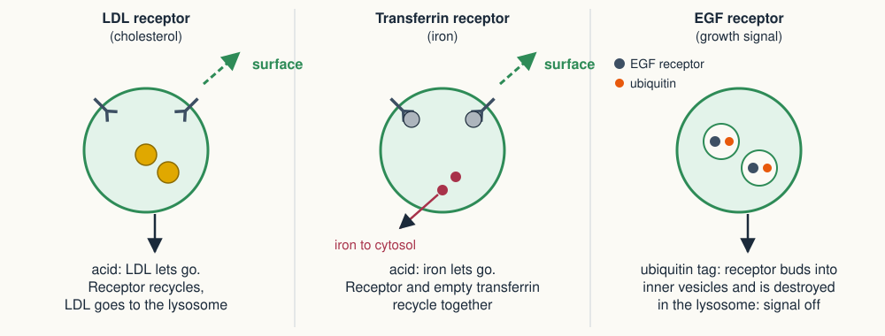
- The same acid gives different results: it frees LDL from its receptor, frees iron from transferrin.
- What goes back to the surface follows the membrane (tubules); what stays in the lumen goes to the lysosome.
- Ubiquitin on a receptor’s tail sends it into internal vesicles and to the lysosome: this is how cells switch off growth-factor signalling.
How do we know? Follow labelled cargo in the electron microscope

- HeLa cell, 5 minutes after uptake. Two cargoes are labelled in two ways:
- EGF receptors: antibody with a 10 nm gold bead (black dots, arrowheads);
- transferrin: coupled to an enzyme (peroxidase) that makes a dark stain.
- Both are in early endosomes (E); none yet in late endosomes (M), which are full of internal vesicles, or lysosomes (L).
- Repeat at 15, 30, 60 min: EGF receptor moves on to M and L; transferrin goes back to the surface. Scale bar 500 nm.
Lysosomes: the cell’s digestive organelle
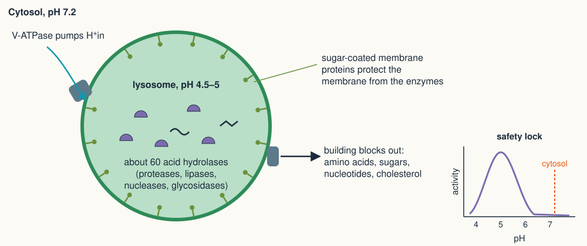
- About 60 hydrolases that break down proteins, lipids, nucleic acids and sugars. They work best at pH 4.5–5 and poorly at pH 7.2: a safety lock if a lysosome leaks.
- The membrane is protected by a thick layer of sugar-coated proteins on its inner face; transporters export amino acids, sugars and cholesterol for reuse.
- Discovered by Christian de Duve by cell fractionation (Nobel Prize 1974).
Getting enzymes to the lysosome: the mannose-6-phosphate tag
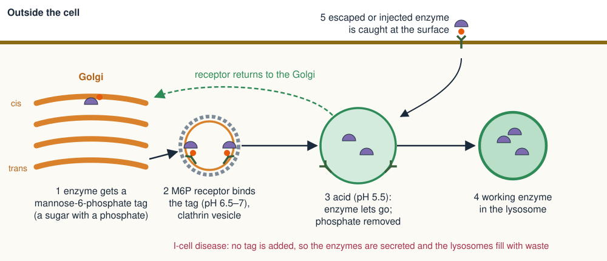
- Lysosomal enzymes are made in the ER like secreted proteins. In the Golgi an enzyme adds phosphate to a mannose sugar on them: mannose-6-phosphate (M6P).
- M6P receptors in the trans Golgi collect them into clathrin vesicles; in the acidic late endosome they let go, and the receptor returns.
- M6P receptors also sit on the cell surface and catch enzymes from outside: the basis of enzyme replacement therapy.
Big gulps: macropinocytosis and phagocytosis
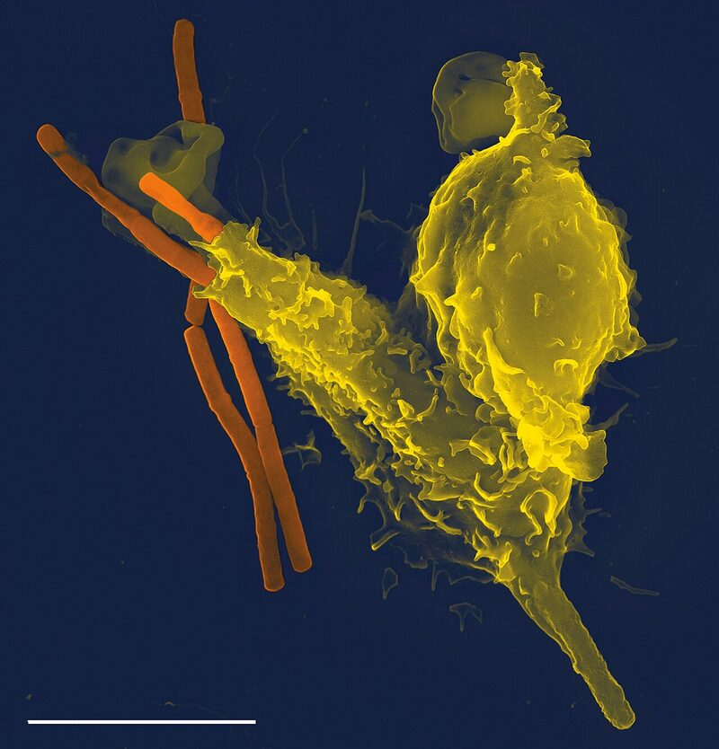
A neutrophil (yellow) engulfing anthrax bacteria (orange), coloured scanning EM. Scale bar 5 µm.
| Clathrin | Macropinocytosis | Phagocytosis | |
|---|---|---|---|
| Size | ~0.1 µm | 0.2–5 µm | > 0.5 µm |
| Takes | chosen receptors | fluid, at random | particles, bacteria, dead cells |
| Driven by | clathrin, dynamin | actin ruffles | actin, triggered by receptors |
| Cells | all | most; high in cancer cells, macrophages | macrophages, neutrophils |
- A phagocyte needs a signal: antibodies or complement on a bacterium, or “eat-me” lipids on a dead cell.
- The phagosome fuses with lysosomes and kills and digests the contents (Immunologi).
Autophagy: the cell eats itself
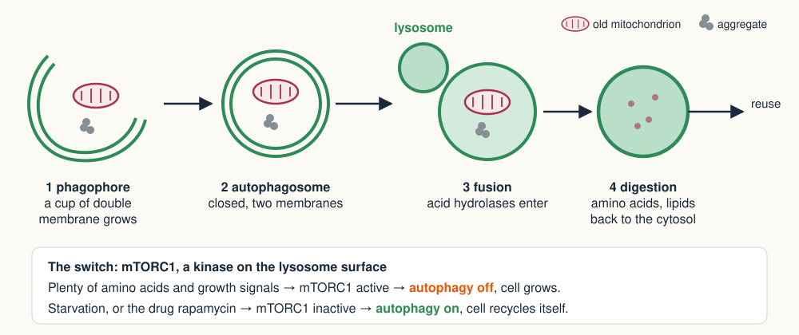
- A double membrane encloses part of the cytosol, an old mitochondrion or a protein aggregate, and delivers it to the lysosome.
- Selective forms remove damaged mitochondria (the mitochondria lecture), aggregates and invading bacteria.
- How do we know? Yoshinori Ohsumi starved yeast lacking vacuole proteases and saw autophagic bodies pile up; mutant screens found the ATG genes (Nobel Prize 2016).
Why it matters: lowering LDL with statins and PCSK9 inhibitors
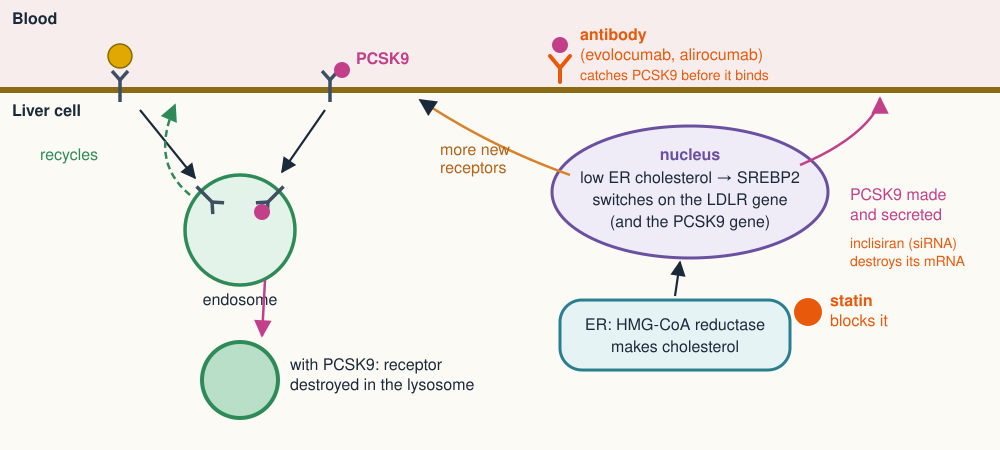
- Statins block HMG-CoA reductase. Less cholesterol in the liver cell → SREBP2 switches on the LDL receptor gene → more receptors pull LDL from the blood: −30 to −50 %.
- PCSK9, secreted by the liver, binds the receptor at the surface; in the endosome it stops recycling and sends the receptor to the lysosome. Mutations that raise PCSK9 cause FH; mutations that lose it give low LDL and fewer heart attacks.
- Anti-PCSK9 antibodies (evolocumab, alirocumab) and inclisiran (an siRNA) give −50 to −60 %, on top of statins.
Why it matters: drugs that must ride endocytosis, and escape
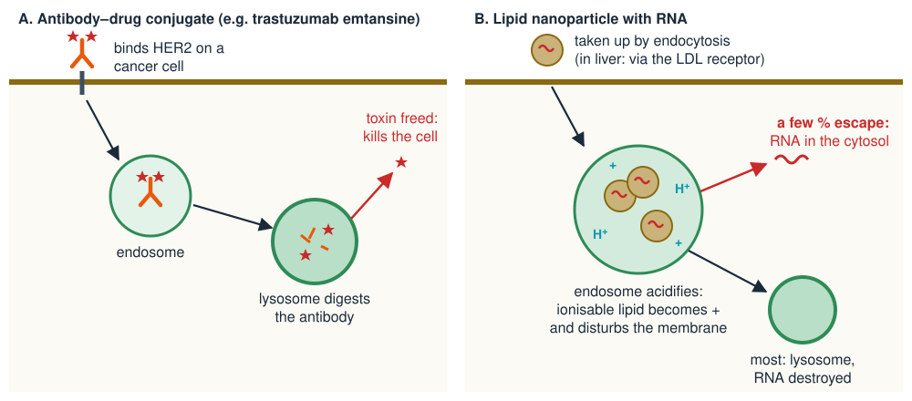
- Antibody–drug conjugates: an antibody brings a toxin to cancer cells that carry its target (HER2). After endocytosis the lysosome digests the antibody or cuts the linker, and the toxin is freed.
- Lipid nanoparticles: the ionisable lipid (pKa about 6.4) is nearly neutral in blood but becomes positive in the acidic endosome, pairs with negative lipids of the endosome membrane and disrupts it. Only 1–2 % of the RNA escapes; the rest is digested. Better escape is a major goal.
Why it matters: lysosomal storage diseases and enzyme replacement
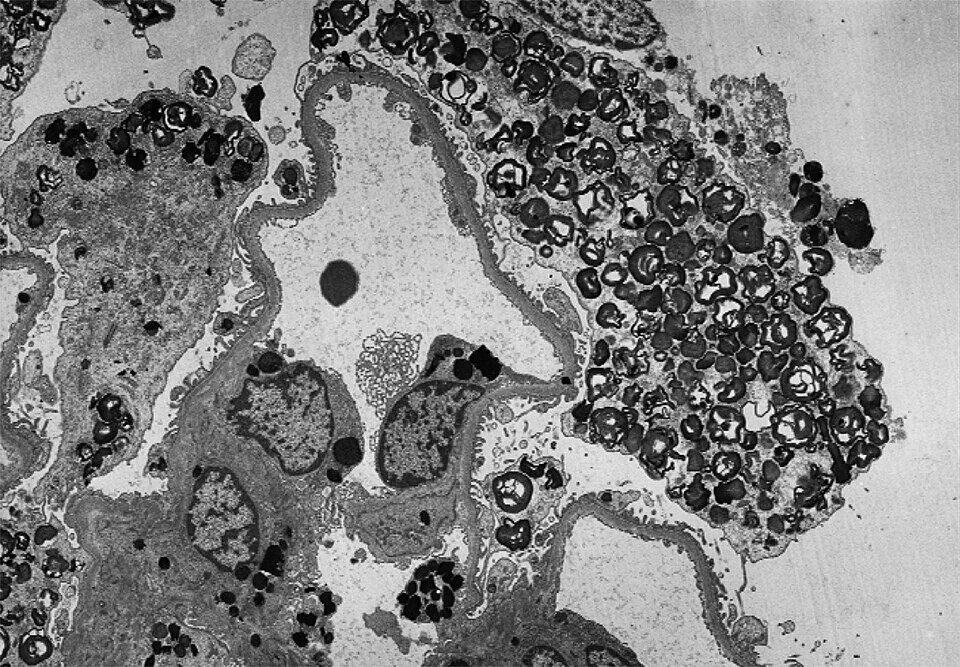
Fabry disease, kidney biopsy (TEM): lysosomes packed with undigested glycolipid (dark, onion-like bodies) in podocytes.
- About 70 diseases, each missing one lysosomal enzyme (or transporter). Together about 1 in 5000 births. Undigested material piles up in lysosomes: Gaucher, Fabry, Pompe, Tay–Sachs.
- Enzyme replacement: infuse the missing enzyme. It enters cells by receptor-mediated endocytosis: the M6P receptor (Fabry, Pompe) or the mannose receptor of macrophages (Gaucher).
- Limits: the enzyme does not cross the blood–brain barrier, so brain disease is not helped; infusions every 1–2 weeks, for life.
Summary
- Clathrin-mediated endocytosis: adaptors pick receptors by short tail signals, clathrin bends the membrane, dynamin pinches off the vesicle. Macropinocytosis and phagocytosis take larger gulps with actin.
- Endosomes sort and mature: the V-ATPase lowers the pH from about 6.5 to 4.5. Acid frees cargo from receptors; free receptors recycle, lumen content and ubiquitin-tagged receptors go to the lysosome.
- The LDL receptor cycles about every 10 minutes; its number at the liver surface sets blood LDL. FH lacks working receptors; statins make more, PCSK9 destroys them, anti-PCSK9 drugs save them.
- Lysosomes digest with acid hydrolases delivered by the mannose-6-phosphate tag and receptor. Autophagy brings the cell’s own parts, controlled by mTORC1.
- Drugs enter by endocytosis: ADCs are freed in the lysosome, LNP RNA must escape the endosome (a few %), enzyme replacement uses the M6P receptor.
Read more (optional): Alberts et al., Molecular Biology of the Cell, 7th ed., ch. 13.